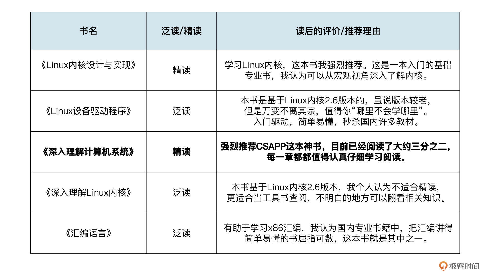
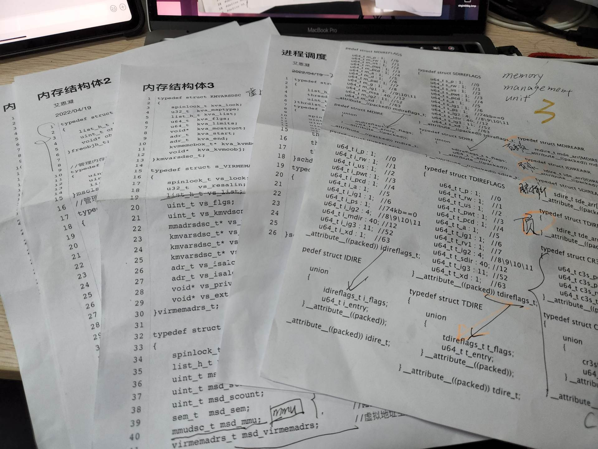
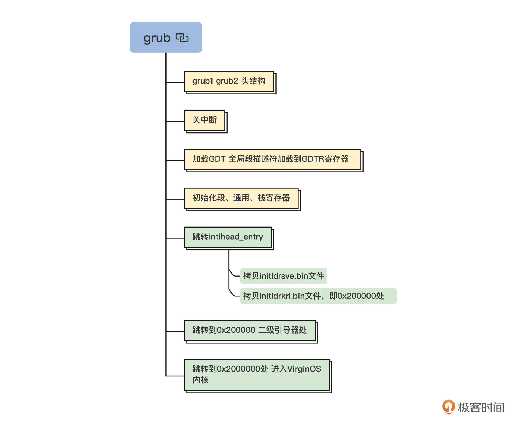
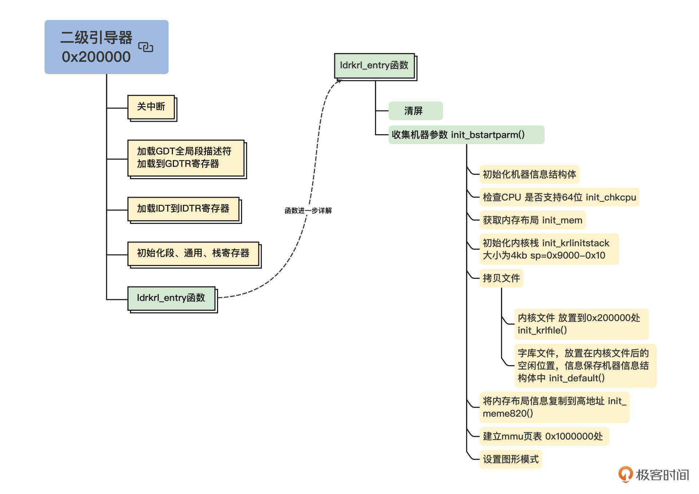
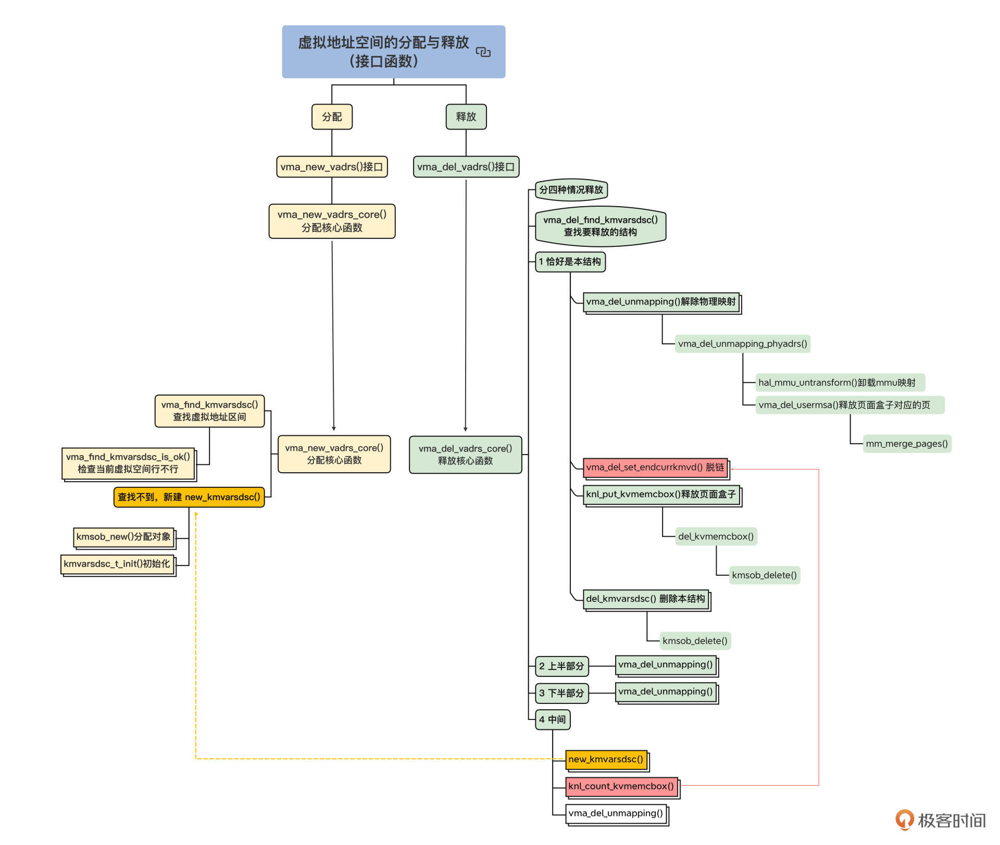

- 00 开篇词 为什么要学写一个操作系统？.md
- 00 编辑手记 升级认知，迭代自己的操作系统.md
- 01 程序的运行过程：从代码到机器运行.md
- 02 几行汇编几行C：实现一个最简单的内核.md
- 03 黑盒之中有什么：内核结构与设计.md
- 04 震撼的Linux全景图：业界成熟的内核架构长什么样？.md
- 05 CPU工作模式：执行程序的三种模式.md
- 06 虚幻与真实：程序中的地址如何转换？.md
- 07 Cache与内存：程序放在哪儿？.md
- 08 锁：并发操作中，解决数据同步的四种方法.md
- 09 瞧一瞧Linux：Linux的自旋锁和信号量如何实现？.md
- 10 设置工作模式与环境（上）：建立计算机.md
- 11 设置工作模式与环境（中）：建造二级引导器.md
- 12 设置工作模式与环境（下）：探查和收集信息.md
- 13 第一个C函数：如何实现板级初始化？.md
- 14 Linux初始化（上）：GRUB与vmlinuz的结构.md
- 15 Linux初始化（下）：从_start到第一个进程.md
- 16 划分土地（上）：如何划分与组织内存？.md
- 17 划分土地（中）：如何实现内存页面初始化？.md
- 18 划分土地（下）：如何实现内存页的分配与释放？.md
- 19 土地不能浪费：如何管理内存对象？.md
- 20 土地需求扩大与保障：如何表示虚拟内存？.md
- 21 土地需求扩大与保障：如何分配和释放虚拟内存？.md
- 22 瞧一瞧Linux：伙伴系统如何分配内存？.md
- 23 瞧一瞧Linux：SLAB如何分配内存？.md
- 24 活动的描述：到底什么是进程？.md
- 25 多个活动要安排（上）：多进程如何调度？.md
- 26 多个活动要安排（下）：如何实现进程的等待与唤醒机制？.md
- 27 瞧一瞧Linux：Linux如何实现进程与进程调度_.md
- 28 部门分类：如何表示设备类型与设备驱动？.md
- 29 部门建立：如何在内核中注册设备？.md
- 30 部门响应：设备如何处理内核I_O包？.md
- 31 瞧一瞧Linux：如何获取所有设备信息？.md
- 32 仓库结构：如何组织文件_.md
- 33 仓库划分：文件系统的格式化操作.md
- 34 仓库管理：如何实现文件的六大基本操作？.md
- 35 瞧一瞧Linux：虚拟文件系统如何管理文件？.md
- 36 从URL到网卡：如何全局观察网络数据流动？.md
- 37 从内核到应用：网络数据在内核中如何流转.md
- 38 从单排到团战：详解操作系统的宏观网络架构.md
- 39 瞧一瞧Linux：详解socket实现与网络编程接口.md
- 40 瞧一瞧Linux：详解socket的接口实现.md
- 41 服务接口：如何搭建沟通桥梁？.md
- 42 瞧一瞧Linux：如何实现系统API？.md
- 43 虚拟机内核：KVM是什么？.md
- 44 容器：如何理解容器的实现机制？.md
- 45 ARM新宠：苹果的M1芯片因何而快？.md
- 46 AArch64体系：ARM最新编程架构模型剖析.md
- LMOS来信：第二季课程带你“手撕”计算机基础.md
- 大咖助场 以无法为有法，以无限为有限.md
- 用户故事 yiyang：我的上机实验“爬坑指南”.md
- 用户故事 成为面向“知识库”的工程师.md
- 用户故事 技术人如何做选择，路才越走越宽？.md
- 用户故事 操作系统发烧友：看不懂？因为你没动手.md
- 用户故事 用好动态调试，助力课程学习.md
- 用户故事 艾同学：路虽远，行则将至.md
- 结束语 生活可以一地鸡毛，但操作系统却是心中的光.md
用户故事 艾同学：路虽远，行则将至
你好，我是艾恩凝。很高兴受邀来写用户故事，可以“吐槽”一下与我结缘的操作系统实战专栏。不对，是夸赞。
其实，这门课在去年底宣传的时候，我就知道了。那时朋友圈铺天盖地在发消息，可以说想不知道都难，当时我只以为是单纯的广告，所以并没有仔细了解。
就这样，我与这么好的一门课擦肩而过。现在回头看来，只是缘分未到，有缘毕竟终会相见。今年3月份的时候，深入了解后我果断入手，学完以后用一句话概括感受的话，课程讲的都是纯纯的干货。
具体来说，我的学习始于2022年3月24日，完结于2022年5月24日，刚刚跑出最终效果，我就迫不及待要来分享了。想一想也好巧啊，正好是两个月的时间（比我有女朋友的时间还长）。
在留言区我也有过不少打卡记录，不过整个课程学完了，还是有很多想说的，正好通过用户故事与你分享。
因为每个人的基础都不同，所以课程感受到的难度也是不一样的。我会跟你聊聊我的知识储备，学习方式还有一些课程实验的实战经验。希望能够给一起学习的你带来启发。
知识储备
首先我交代一下自己的知识储备背景吧。目前我在东北某地某高校读研，研二，喜欢嵌入式方面的技术，特别是对系统非常感兴趣。过去我移植过U-Boot，裁剪过Linux内核，也简单实现过FreeRTOS内核的进程调度。
过去的技术积累对我学习这门课也有一定的帮助。比如说，在我看来Cosmos的进程调度就跟FreeRTOS内核的设计思想很类似，使用几个优先级链表来实现进程调度。如果你还想看看我做过的软件项目和技术文章，可以通过这里了解。
我本科是计算机科学与技术专业，基础核心课不说融会贯通，但很基础的课程像数据结构、基础算法等，我自认学得还不错。
语言方面，最基础的C语言，尤其是指针，我也研究过（如果能明白指针和内存的关系，我想指针就是纸老虎了）。至于汇编语言，我会写一些简单的ARM汇编，但对于x86汇编还是很陌生。最后是Linux基础，常用指令以及GCC、Makefile、shell的使用等等我都有涉猎。
列了这么多基础知识，你是否好奇我主要通过什么来学习呢？这里我要强烈建议你选一些经典图书阅读。因为走了这么多弯路，我觉得读书的效率还是最高的。我把学这门课之前读过的书目，以及我的阅读方法和读后简评汇总成了一张表，你可以参考一下。

其实，看书不一定要从头看到尾。我更喜欢结合自己当前主攻的技术问题来学习，也就是用到哪部分知识，再相应深入研究。这样你的印象才能更深刻。毕竟漫无目的地学习，效率会比较低下。
比如，我们想要了解C语言编译链接的过程，就可以仔细看看CSAPP的第七章，这部分对链接原理的讲解非常清晰，知识结构也更加系统。比起搜索碎片化的网络解读，你不如沉下心读读书，这样学习效率会更高。
另外，我也做过大大小小的嵌入式项目。总体来说，个人知识储备是广而不深，怀揣着对系统的热爱，我开始学习这门操作系统实战课。
学习方式
不管你是出于什么目的来学习这门课。我觉得最重要的是坚持下来。坚持，是成功者必须具备的条件。有的人能为了追到一个妹子一直坚持，我觉得学新知识也应该如此（开个玩笑）。坚持下来，迎难而上，你才能有所收获。
其次，开始这门课，应该给自己定一个明确的目标。比如我的目标是：不只学习新的理论知识，还要实战，也就是跟着写代码。毕竟理论跟实战真的不一样，虽然这无形之中增加了难度，但回头来看，我也感谢自己这么选择。
这门课程的实战非常接近一个项目工程，都是在前面的基础上一点点加功能，完成之后，有种逐渐建起一座塔的那种成就感。其实就算你不能完整实战，或者现阶段，你只能先理解课程里的理论思路，我觉得学完也会有不少收获。
除了坚持和基于目标努力，我还把整个学习任务做了一定的拆解。在计算机的世界，复杂问题总能拆分成相对好解决的子问题，复杂的工程也常常可以采取“分而治之”的策略。
那我是怎么拆分学习任务的呢？其实课程的目录结构就很好。
我觉得应该把整体内容分成三大块：准备期，内存部分和余下的部分。当然每个人可以不一样，根据自己本身实际情况划分即可。每学习一章节，我都过了三遍。此处的学习不是浏览下来理解就完事了，那只能停留在理论上。
具体过程我是这样安排的。第一遍学习理解理论知识。第二遍做思维导图，理解程序过程，记录知识点等等。
第三遍最重要，并且我花的时间最长，那就是实战写代码。同时为了养成良好的习惯，我会强制自己写注释。毕竟有不少代码相对复杂，哪怕前面已经理解了，过几天也真的不知道这个地方干了什么。同时像有些结构体之类的代码，我甚至打印出来做分析。
后面这张图是我打印出来的一部分代码，也分享给你感受一下。

这里我选择了Grub启动、二级引导器以及内存部分的导图给你展示一下。更多导图我就不一一展示了，你可以通过这里获取。



我觉得，这门课最大的难度就是内存部分。从我自己的体验看，内存一过，基本可以一马平川。Cosmos内存的设计思想与Buddy、Slab类似，而进程的实现方式与RTOS类似，我想你只要明白了其中的一种，其他系统的也会很容易理解。而对于内存对象，最重要的还是理解概念，然后再专注于代码细节。
调试程序：跟Bug斗其乐无穷
前面说过，我并不满足于单纯学习理论知识，而是立下了把代码实现出来这个目标。这两个月的时间，我一半的时间都在调程序，所以想专门和你聊一聊。
如果你自认实战能力还不错。我建议你和我一样，从零开始搭建好项目后，在自己搭建的项目上，跟着课程讲解的顺序一点一点去实现。
当然，在这个过程中，我们会遇到很多错误，我想一个合格的程序员会一一解决出现的错误。磨刀不误砍柴工，这个跟Bug斗争的过程，不也正是提高写代码调试代码的能力嘛。
最后的程序，我大概用了近一个周才完成。当然不是全职调试，调程序的快乐不亲自体验是感受不到的，反正自己是快乐了。我印象最深的就是文件系统那里，在最后的调试测试过程中，执行到文件测试函数就会宕机，造成整个系统崩溃。
先前我一直认为是进程调度或者文件驱动那有问题，反复查看。最后才想到，是不是测试函数写错了？
果然，仔细查看代码，找到了0f写成了ff的问题。我总是特别相信“简单的代码不会出问题”，一时大意，导致自己折腾更久。希望你不要像我一样轻视“简单的代码”。同时强烈推荐你用GDB调试，像我说的这种错误，用GDB很快就能定位到。
我把自己的做的所有工作都通过笔记记录了下来。最后，我还给系统添加了一个shell上的简易计算器，主函数如下。思想很简单，代码相信你很容易就能看懂：
int cal_main(hand_t *hand)
{
//定义并初始化一些变量
int input = 1;
memset((void*)&calbuff, 0, sizeof(shellkbbuff_t));
int(*p[5])(int, int) = { 0, Add, Sub, Mul, Div };//函数指针数组
int kbcode;
while (1)//循环
{
cal_st:
menu();
printf(" 请选择：");
for(;;){//这个循环是获取键盘数据
kbcode = read_keyboard_code(*hand);
if(32 <= kbcode && 127 >= kbcode){
input = kbcode - 48;
gl_fl = input;
printf("%d\n", input);
if(!input)break;
if(input < 0 || input > 4){
cal_err:
printf("\n input err,please restart input !\n");
goto cal_st;
}
if (input >= 1 && input <= 4){
calc(p[input],hand);//计算函数
goto cal_st;
}
}
if(0x103 == kbcode){
goto cal_err;
}
}
break;
}
printf(" exit!");
return 0;
}
经历了种种挑战，我最终完成的效果演示视频如下，希望也能激励到正在学习的你。
https://pic.aeneag.xyz/virginOS/virginOS.mp4
视频中添加了开机动画。看起来简单的几秒动画，实际是近240张序列帧图，如果感兴趣的话，可以在 initldr/ldrkrl/graph.c 中查看具体实现，在此，我要特别感谢我的朋友胖哥提供的图片支持。
另外，我也添加了几个shell命令，比如前面提到的简易计算器cal指令，感兴趣的可以在app文件夹下查看具体实现代码。
当然这也只是我的阶段性成果。以后我有机会一定要实现进程那块的红黑树进程调度，还有一些常用的shell命令。
此地一为别，孤蓬万里征
虽然课程的学习告一段落，但对OS的热爱才刚刚开始，此地一为别，孤蓬万里征。
你我仍在路上。世上没有白走的路，有的话，也许多走几遍就能发现“隐藏宝藏”。我与这门课共度了两个月，期间一直对着代码废寝忘食地折腾。
我觉得最大的认知改变就是视角的切换，以前更多是以一个使用者的角度去看系统，如今却能以一个设计实现者的角度去看系统。
举个例子。不知道你是否写过驱动程序。如果有过这样的经历，应该知道这会用到很多由内核提供的接口函数或者结构体，比如最常用的file_operations。写驱动是使用这些接口，那么通过这门课，我们却成为了提供这些接口的角色，比如提供驱动中的drvstus_t结构体等等。
最后送给大伙儿三点建议：
1.下定决心的事，要坚持完成，有始有终；- 2.多思考，多做笔记，多动手；- 3.多读书。
也祝愿你在这门课里收获属于自己的精彩！如果觉得我的分享还不错，希望点赞或者评论支持一下。
© 2019 - 2023 Liangliang Lee. Powered by gin and hexo-theme-book.